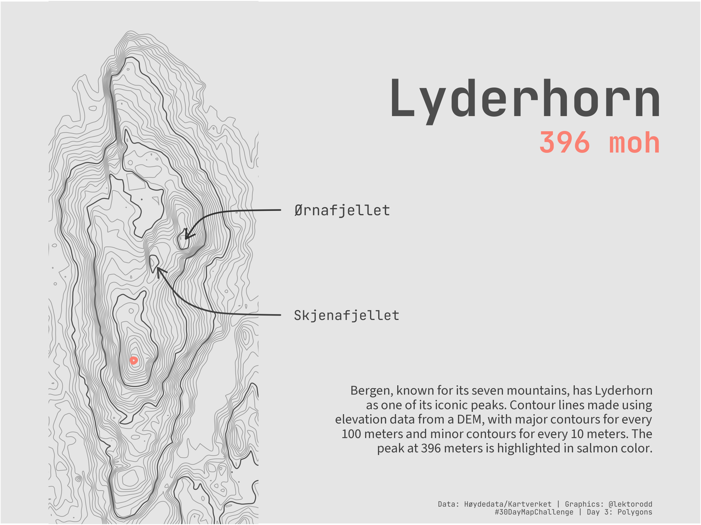
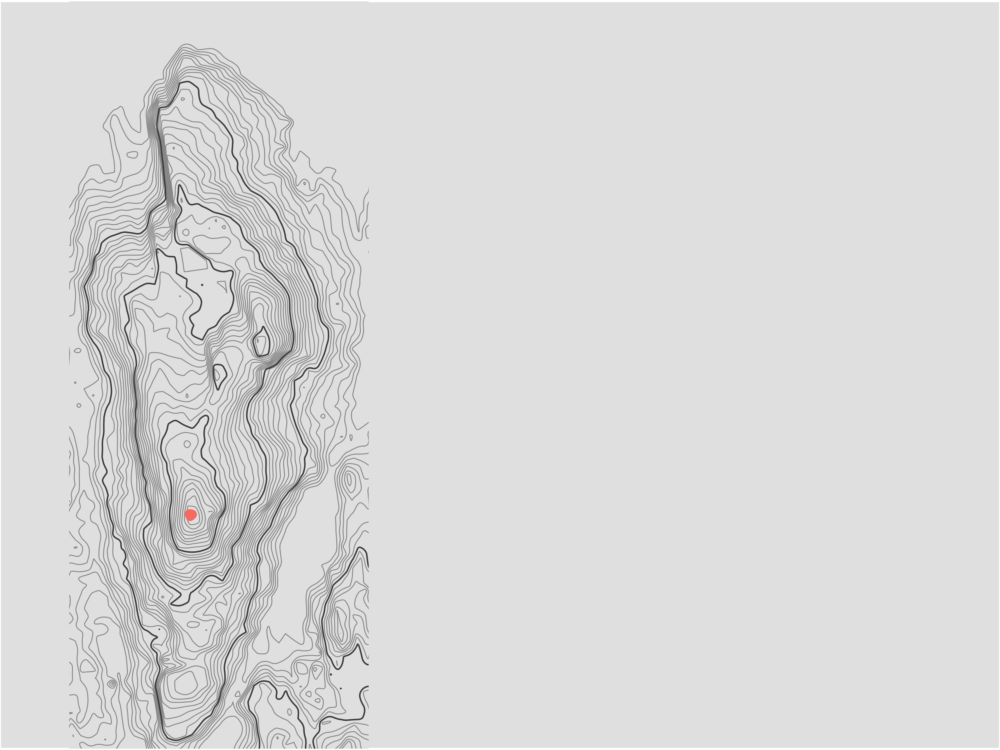
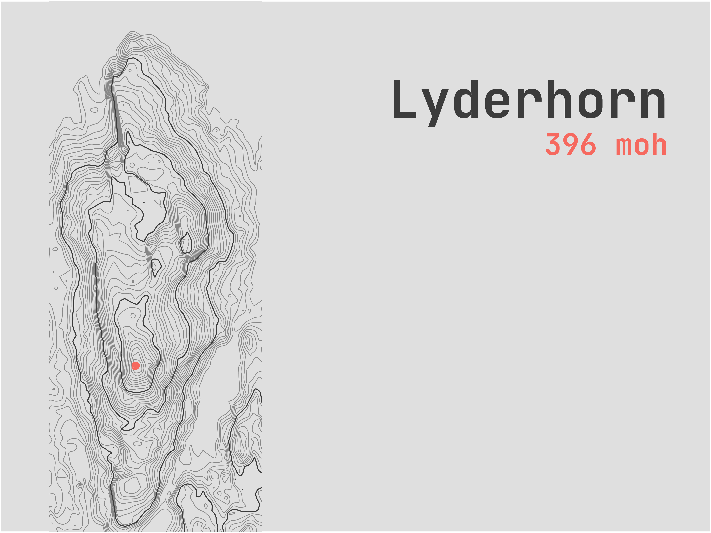
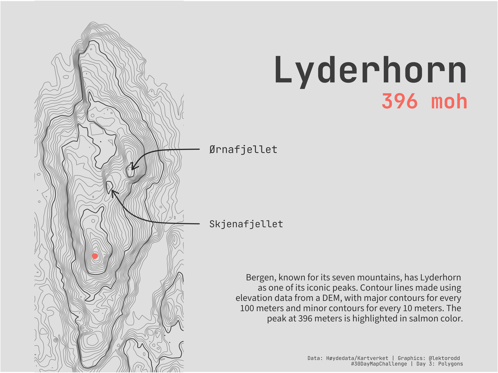

library(ggplot2)
library(terra)
library(sf)
library(dplyr)
library(here)
library(smoothr)
library(cowplot)
library(showtext)
library(grid)Day 3 - Polygons
#30DayMapChallenge 2025
R
code
maps
2025
Trying a different approach today. Using elevation data from a DEM to create contour polygons for a mountain in Bergen, Norway called Lyderhorn (396 meters above sea level).

TipLibraries used
dem <- rast(here("data/lyderhorn/data/dom1-33-104-120.tif"))# Create all contours at 10m intervals (including 1m to avoid sea)
all_levels <- c(1, seq(10, 400, by = 10))
all_contours_raw <- as.contour(dem, levels = all_levels) |>
st_as_sf() |>
mutate(elevation = as.numeric(level))
# Smooth all contours
all_contours <- smooth(all_contours_raw, method = "chaikin", refinements = 5) |>
st_transform(4326)
# Separate into major (100, 200, 300, 400) and minor (everything else)
major_contours <- all_contours |>
filter(elevation %in% c(100, 200, 300, 400))
minor_contours <- all_contours |>
filter(!elevation %in% c(100, 200, 300, 400))
# Plot with lat/lon coordinates
p <- ggplot() +
geom_sf(data = minor_contours, color = "grey60", size = 0.25) +
geom_sf(data = major_contours, color = "grey30", size = 0.4) +
geom_sf(data = all_contours |> filter(elevation == max(elevation)),
color = "salmon", size = 2) +
coord_sf(xlim = c(5.23, 5.26), ylim = c(60.363, 60.40)) +
theme(
panel.grid = element_blank(),
axis.text = element_blank(),
axis.ticks = element_blank(),
axis.title = element_blank(),
plot.background = element_rect(fill = "gray90"),
panel.background = element_rect(fill = "gray90"),
plot.margin = margin(0, 365, 0, 40)
)
print(p)
Add some text
Here I will try to use the cowplot library to add some text to the plot.
title = "Lyderhorn"
subtitle = "396 moh"
font_add_google("JetBrains Mono", "jbmono")
font_add_google("Source Sans 3", "sourcesans")
showtext_auto()
showtext_opts(dpi = 300)
title_font <- "jbmono"
body_font <- "sourcesans"
# title
p <- ggdraw(p) +
draw_label(
title,
x = 0.94, y = 0.85,
hjust = 1, vjust = 1,
color = "grey30", size = 42, fontfamily = title_font, fontface = "bold"
) +
draw_label(
subtitle,
x = 0.94, y = 0.75,
hjust = 1, vjust = 1,
color = "salmon", size = 24, fontfamily = title_font, fontface= "bold"
)
print(p)
# Create a curved arrow grob
ørnafjellet <- curveGrob(
x1 = 0.4, y1 = 0.6,
x2 = 0.265, y2 = 0.545,
curvature = 0.2,
arrow = arrow(length = unit(0.3, "cm"), type = "open"),
gp = gpar(col = "gray20", lwd = 1.75)
)
skjenafjellet <- curveGrob(
x1 = 0.4, y1 = 0.4,
x2 = 0.225, y2 = 0.49,
curvature = -0.2,
arrow = arrow(length = unit(0.3, "cm"), type = "open"),
gp = gpar(col = "gray25", lwd = 1.75)
)
p <- ggdraw(p) +
draw_grob(ørnafjellet) +
draw_grob(skjenafjellet) +
draw_label(
"Ørnafjellet",
x = 0.42, y = 0.60,
hjust = 0, vjust = 0.5,
color = "gray25", size = 12, fontfamily = title_font
) +
draw_label(
"Skjenafjellet",
x = 0.42, y = 0.40,
hjust = 0, vjust = 0.5,
color = "gray25", size = 11, fontfamily = title_font
) +
draw_label(
"Bergen, known for its seven mountains, has Lyderhorn \nas one of its iconic peaks. Contour lines made using \nelevation data from a DEM, with major contours for every \n100 meters and minor contours for every 10 meters. The \npeak at 396 meters is highlighted in salmon color.",
x = 0.93, y = 0.265,
hjust = 1, vjust = 1,
color = "gray25", size = 11, fontfamily = body_font
) +
draw_label(
"Data: Høydedata/Kartverket | Graphics: @lektorodd \n#30DayMapChallenge | Day 3: Polygons",
x = 0.93, y = 0.02,
hjust = 1, vjust = 0,
color = "gray30", size = 6, fontfamily = title_font
)
print(p)